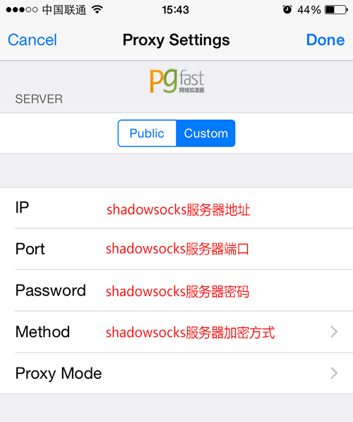
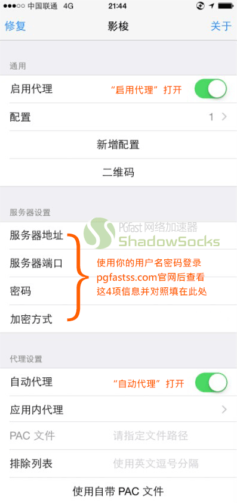

一、未越狱
iOS 非越狱的话，点击 https://itunes.apple.com/us/app/shadowsocks/id665729974?mt=8 可以直接安装 Shadowsocks 的 app。
安装好之后是一个浏览器，内置shadowsocks，点击右上角设置打开设置界面设置服务器信息即可。

二、已经越狱
打开 Cydia 搜索“Shadowsocks"并安装。
安装好打开后界面如下图所示：
1、设置好“服务器地址”、“服务器端口”、“服务器密码”和“加密方式”四项
2、界面下半部分“代理设置”内的“自动代理”打开
3、点击最顶端的“启用代理”（Enable Proxy）打开后即可使用。
可以通过点击“新增配置”（Create New Profile）来创建多个服务器代理设置后通过点击“配置”方便切换。
